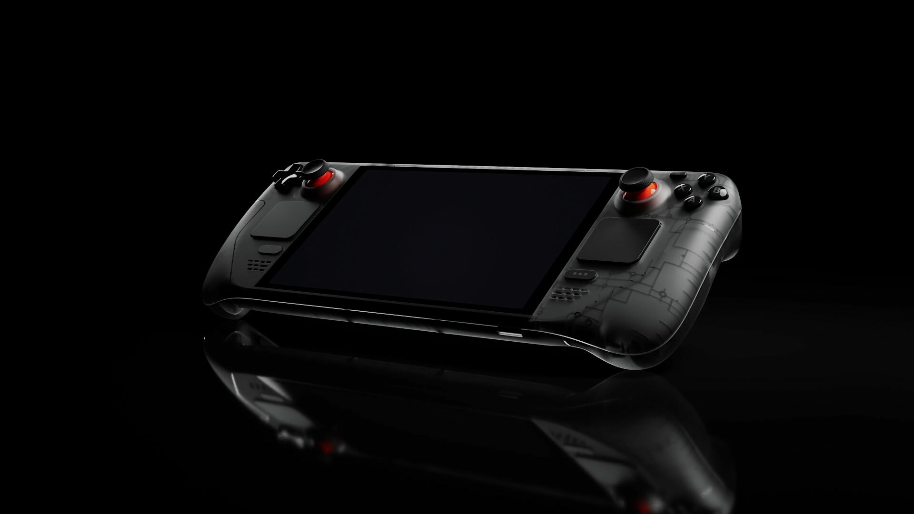
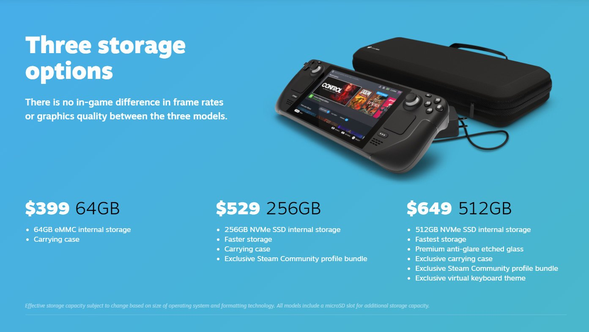

Steam Deck LCD 256GB
This version includes an LCD display and solid-state storage for faster loading times. It is a strong entry point for players who want a portable PC gaming device with good speed and a reliable experience.
Portable PC gaming powered by Valve

The Steam Deck is Valve's portable gaming PC — a handheld device that runs your full Steam library with the freedom, flexibility, and customization of a real computer.
The Steam Deck blends console convenience with full PC depth. Built around an AMD APU with analog sticks, haptic trackpads, gyroscope, and a touchscreen, it can run modern games, emulate older systems, connect to external displays, and function as a complete mini computer when docked.

This version includes an LCD display and solid-state storage for faster loading times. It is a strong entry point for players who want a portable PC gaming device with good speed and a reliable experience.
This model upgrades the display to OLED, which gives deeper blacks, stronger contrast, and more vivid color. It also includes improved battery efficiency and more storage for larger game libraries.
This higher-end version offers the same OLED improvements with a larger 1TB internal SSD. It is ideal for users who install many AAA games, want faster storage access, and prefer a premium handheld setup.
The Steam Deck is powered by a custom AMD APU combining a Zen 2 CPU and RDNA 2 GPU on one chip with unified RAM — delivering real PC gaming performance in a handheld form factor. NVMe SSD storage cuts load times dramatically, and microSD expansion lets you grow your library without touching the internal drive.
Its control layout goes far beyond a standard gamepad: dual sticks, haptic trackpads, gyroscope, analog triggers, and rear grip buttons give it a hybrid identity between controller and computer. OLED models add deeper contrast, better battery efficiency, and sharper visuals on top of all of that.
The Steam Deck runs SteamOS — Valve's Linux-based OS with a clean console interface. Proton, its built-in compatibility layer, lets most Windows games run natively on Linux, unlocking the vast majority of the Steam library without any extra setup.
Built-in performance tools let you tune FPS limits, power draw, and display settings per game. Desktop Mode transforms the device into a full Linux computer — browse, install apps, and work beyond gaming. Community control profiles make even mouse-and-keyboard games playable via trackpads and gyro aiming.
The Steam Deck proves desktop-class power can fit in your hands without sacrificing flexibility. It is a console, gaming PC, Linux computer, and portable media device in one — a blueprint for the future of compact, all-purpose computing.